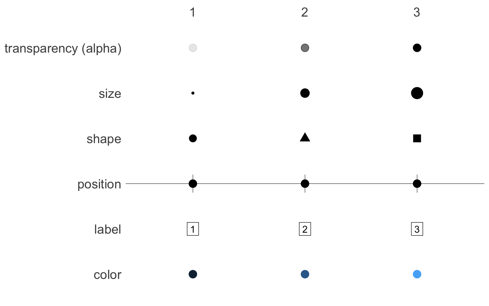
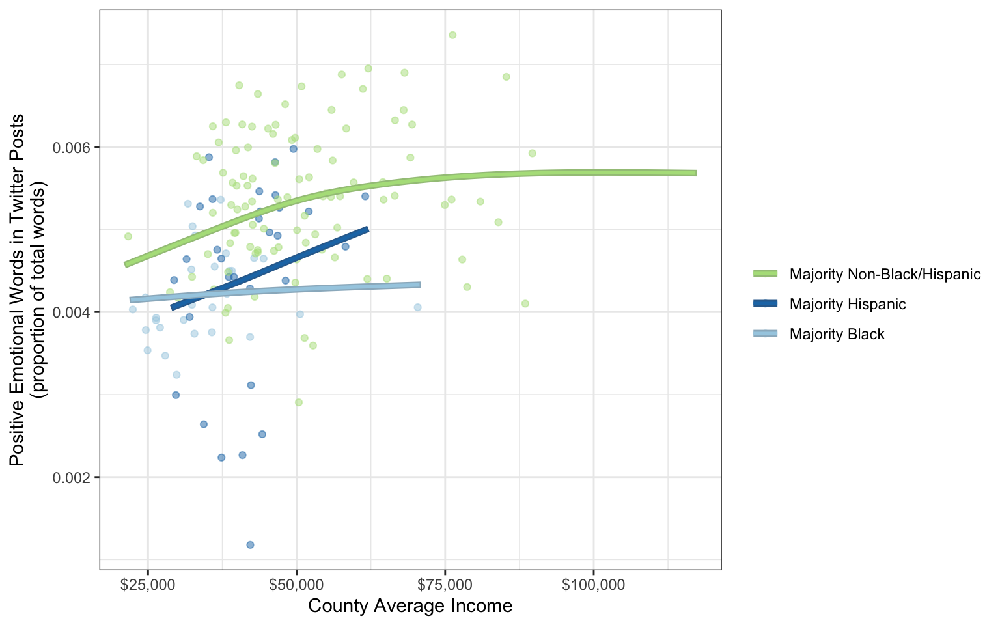
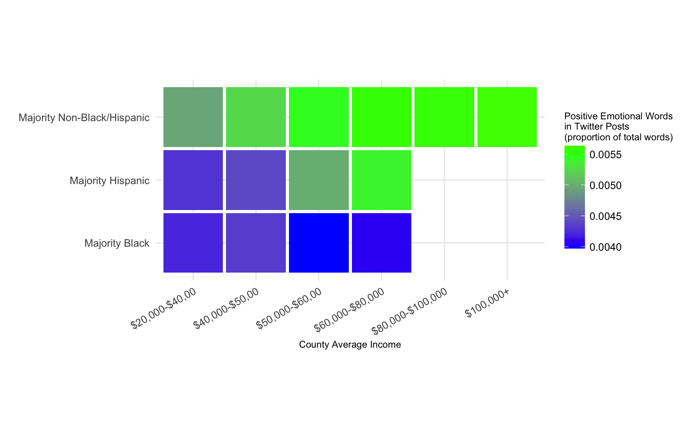
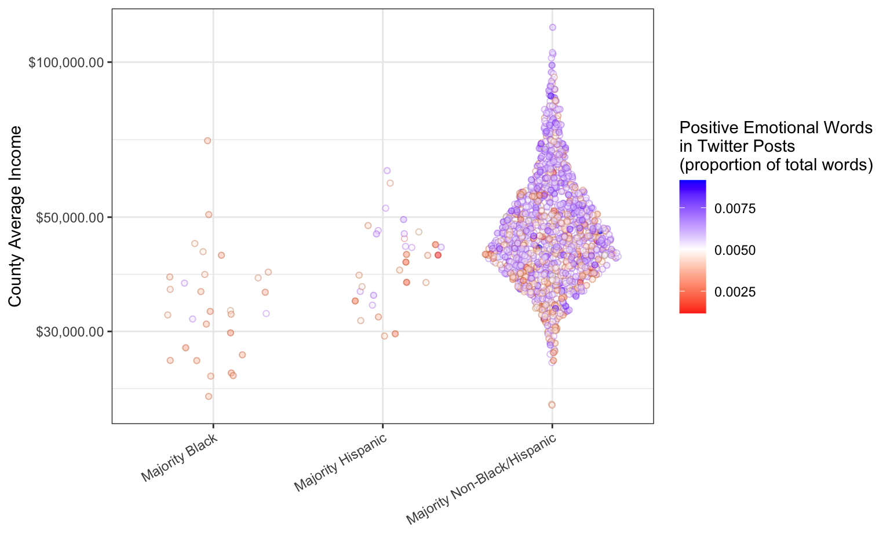

3 Why Aesthetic Choices are Important
Take a moment to appreciate this comic from xkcd.com:

For most people, aesthetics is the art of making things pleasant to look at. To the data visualizer though, “aesthetics” means something much more precise: Aesthetics are the visual representation of variables.
Just as journalists need to decide which words to use to express their ideas, data visualizers need to decide which aesthetics to use to express their variables.
There are many options. Below are six different ways to represent the numbers “1”, “2”, and “3”, each mapping them to a different aesthetic.
Let’s take a concrete example. Eichstaedt et al. (2015) collected Twitters posts from 935 U.S. counties, and counted the number of words related to positive emotions. This emotional measure could then be connected with known demographic measures of each county, such as race and average income.
head(twitter_counties)#> # A tibble: 6 × 5
#> county state income posEmotions maj
#> <chr> <chr> <dbl> <dbl> <chr>
#> 1 Autauga AL 55165 0.00549 Majority Non-Black/Hispanic
#> 2 Baldwin AL 50006 0.00670 Majority Non-Black/Hispanic
#> 3 Blount AL 43450 0.00336 Majority Non-Black/Hispanic
#> 4 Butler AL 29769 0.00407 Majority Non-Black/Hispanic
#> 5 Calhoun AL 38473 0.00448 Majority Non-Black/Hispanic
#> 6 Chambers AL 30546 0.00523 Majority Non-Black/HispanicThere are many ways to present this information graphically. Each choice emphasizes a different aspect of the data, and tells a different story.
In the following visualization,
-
incomeis mapped to the “x” position aesthetic -
posEmotions(positive emotions) is mapped to the “y” position aesthetic -
maj(racial majority) is mapped to the color aesthetic
library(ggborderline) # for making the lines pop
twitter_counties |>
ggplot(
aes(income, posEmotions,
# rearrange the categorical variable so that the order
# in the legend matches the order in the plot
color = factor(
maj,
levels = c("Majority Non-Black/Hispanic",
"Majority Hispanic",
"Majority Black")
)
)
) +
# scatterplot
geom_point(alpha = .5,
# draw sample such that "Majority Non-Black/Hispanic"
# points don't overpower the others
data = twitter_counties |>
group_by(maj) |>
slice_sample(n = 100)) +
# loess regression
stat_smooth(
# borders that match the lines, but are slightly darker
aes(bordercolor = after_scale(colorspace::darken(color))),
se = FALSE, geom = "borderline",
linewidth = 1, lineend = "square"
) +
theme_bw() +
# nicer color palette
scale_color_brewer(
palette = "Paired",
direction = -1
) +
# proper formatting for income
scale_x_continuous(labels=scales::dollar_format()) +
labs(
x = "County Average Income",
y = "Positive Emotional Words in Twitter Posts\n(proportion of total words)",
color = ""
)
This is the most intuitive way to organize the three variables. By mapping income to the x axis, we lightly suggest that it is the cause of whatever is happening on the y axis—in this case positive emotion. The idea that higher income causes positive emotion is intuitive—any people believe they would be happier with a higher income. People accustomed to languages that are written left-to-right, like English, will tend to think about what happens as they move left to right on the graph. Three LOESS regression lines encourage the viewer to compare the slopes of the three color groups, which they will go through from top to bottom:
- In counties without a Black or Hispanic majority, greater income means more positive emotion, up to about $60,000 a year, when the line starts flattening out.
- In counties with a majority Hispanic population, greater income means dramatically more positive emotion, on average.
- In counties with a majority Black population, greater income doesn’t seem to make much of a difference.
But just because this scheme is the most intuitive does not mean it is the best one.
The next visualization shows the same data but tells a different story. This one also has x, y, and color, but they are mapped to the variables differently:
-
incomeis binned and mapped to the “x” position aesthetic -
maj(racial majority) is mapped to the “y” position aesthetic -
posEmotions(positive emotions) is mapped to the “fill” color aesthetic
twitter_counties |>
# hand-made bins (note the inconsistent bin width to
# give more space to the center of the distribution)
mutate(
income = factor(
case_when(
income > 100000 ~ "$100,000+",
income > 80000 ~ "$80,000-$100,000",
income > 60000 ~ "$60,000-$80,000",
income > 50000 ~ "$50,000-$60,00",
income > 40000 ~ "$40,000-$50,00",
.default = "$20,000-$40,00"),
levels = c("$20,000-$40,00",
"$40,000-$50,00",
"$50,000-$60,00",
"$60,000-$80,000",
"$80,000-$100,000",
"$100,000+")
)
) |>
# aggregate by the new bins
group_by(income, maj) |>
summarise(
posEmotions = mean(posEmotions,
na.rm = TRUE)
) |>
# plot
ggplot(aes(income, maj, fill = posEmotions)) +
# tiles with a little bit of space in between
geom_tile(width = .95, height = .95) +
# minimal theme
theme_minimal() +
# color scale to emphasize differences between extremes
scale_fill_gradient2(low = "blue",
mid = "green",
high = "yellow",
midpoint = .0055) +
labs(
x = "County Average Income",
y = "",
fill = "Positive Emotional Words\nin Twitter Posts\n(proportion of total words)"
) +
theme(
# angles x axis text to fit it all in
axis.text.x = element_text(angle = 30, hjust = 1),
axis.title = element_text(size = 8),
legend.title = element_text(size = 8)
) +
# constrain the tiles to be perfectly square
coord_equal()
Using fill makes it harder to see the slope within each racial group, and easier to see the differences between them. The vertical ordering from most positive emotion (in majority non-Black/Hispanic counties) to least positive emotion (majority Black counties) emphasizes this even more. The blank squares on the grid also make the point that there are no majority Black or Hispanic counties with average incomes above $80,000.
Let’s try one more way to present these data. In this visualization,
-
incomeis mapped to the “y” position aesthetic -
posEmotions(positive emotions) is mapped to the “color” aesthetic -
maj(racial majority) is mapped to the “x” position aesthetic
set.seed(2023)
twitter_counties |>
ggplot(aes(maj, income, fill = posEmotions)) +
# sina plot
ggbeeswarm::geom_quasirandom(
aes(color = after_scale(colorspace::darken(fill, .3))),
alpha = .5, method = "pseudorandom",
shape = 21, varwidth = TRUE
) +
# color scheme which maximizes the visibility of different
# values among the crowd (this is a losing battle)
scale_fill_gradient2(low = "red",
mid = "white",
high = "blue",
midpoint = .005) +
# unintrusive theme
theme_bw() +
# log scale, and proper formatting for income
scale_y_continuous(
labels=scales::dollar_format(),
trans = "log10"
) +
labs(
x = " ",
y = "County Average Income",
fill = "Positive Emotional Words\nin Twitter Posts\n(proportion of total words)"
) +
theme(axis.text.x = element_text(angle = 30, hjust = 1))
This is a sina plot (also known as a beeswarm plot), in which point clouds are arranged by a continuous variable on one axis, a categorical variable on the other axis, and spread out in proportion to their density along the spaces in between the categories.
Sina plots are a good way to compare distributions of different groups (they are almost always more informative than box plots or violin plots); this plot emphasizes that counties with a majority Black population tend to have relatively low average incomes. The other story that this plot tells is the uneven sizes of the three groups—by separating out the points in each group, this visualization emphasizes the fact that there are very few US counties with majority Black or Hispanic population.
This plot makes it very difficult to learn anything about positive emotion in Twitter posts. The colors themselves give some guidance: the white in the middle of the scale suggests that it represents some sort of zero point—a “normal” amount of positive emotion. Nevertheless, the viewer will have to squint in order to notice the trend for higher income counties to be happier. The emotional variable is not adding much to this visualization.
In this chapter we have seen how choices about which aesthetics to map to variables make a big difference in the way a data visualization is interpreted. Three visualization of the same data can emphasize tell very different stories.
Press the “View Source” button below to see the hidden code blocks in this chapter.
Eichstaedt, J. C., Schwartz, H. andrew, Kern, M. L., Park, G., Labarthe, D. R., Merchant, R. M., Jha, S., Agrawal, M., Dziurzynski, L. A., Sap, M., Weeg, C., Larson, E. E., Ungar, L. H., & Seligman, M. E. P. (2015). Psychological language on twitter predicts county-level heart disease mortality. Psychological Science, 26(2), 159–169. https://doi.org/10.1177/0956797614557867